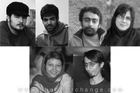

|
|

برای بازداشت شده گان روز کارگر
شعری شبانه برای دوستانم ....
نگار انسان
يكشنبه13 اردیبهشت 1388
عادت هر روزمان شده که وقتی صفحه ی اول سایت ها را باز می کنیم، خبر بازداشت یکی دیگر از دوستانمان را ببینیم ... و این بار هم نوبت به چند نفر دیگر از دوستانم رسیده است و چه زیبا و غم انگیز نیکزاد در یکی از نوشته هایش گفته بود که ما نوبت خود را انتظار می کشیم، بی هیچ خنده ای! (1)
بالاخره نوبت فرا رسید ... گویی دل نگرانی هم بخشی از زندگی همه ما شده است ... و من باز هم دل نگرانم ... دل نگران طه مهربان که هربار که می دیدمش با خنده های انرژی بخش اش من را در همه ی با هم بودن هایمان از جمع آوری امضا تا مراسم 8 مارس همراهی می کرد و پشتکار تحسین برانگیز او برای برابری و تلاش فراوانش برای سخن گفتن از نابرابری ها برای پیمودن راه پر فراز و نشیب مان همواره برایم آرامش بخش و ستودنی بود ....
من دل نگران نیکزاد گل و مهربانم هستم که با جدیت و استواریش در همه جا محافظ و مراقب ما بود اما این بار خود در جایی است که چندی پیش گفته بود ما نوبت خود را به انتظار می کشیم ، بی هیچ خنده ای !
من دل نگران امیر و پوریا و جلوه و کاوه هستم.
من دل نگران کارگران سرزمینم هستم که با زحمت و تلاش فراوان زندگی خود را می چرخانند و امروز در جایی هستند که نباید باشند ... و من غمگینم از اینکه حرمت دستان زحمت کشیده شان شکسته شد و با اندوهی فراوان تا صبح برای این دستان و بی حرمتی به آنان گریستم ...
من از این همه رنج و درد و نگرانی گریستم و هنوز دل نگران کسانی هستم که تا چندی دیگر به جرم انسانیت و برابری خواهی در بند اسیر خواهند شد...
(1) و ما نوبت خود را انتظار می کشیم، بی هیچ خنده ای!؛ نیکزاد زنگنه